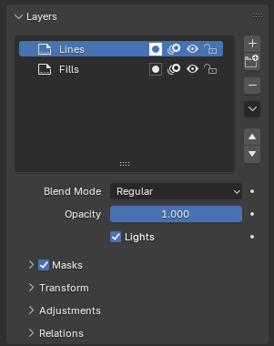
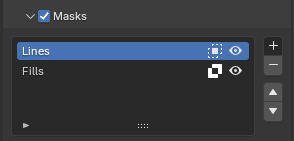
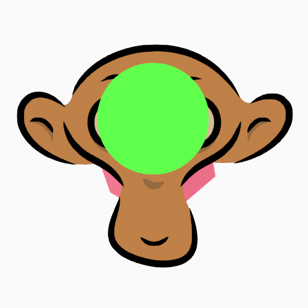
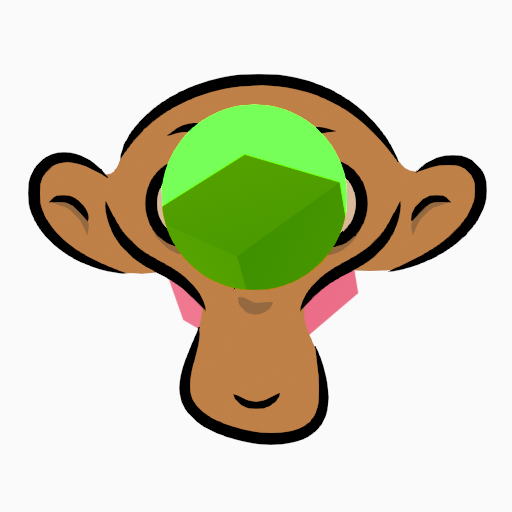
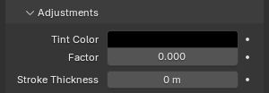

Layers¶
Tham khảo
- Mode:
All Modes
- Panel:

Panel Grease Pencil Layers.¶
Các object Grease Pencil có thể được tổ chức thành một cây gọi là layer tree để nhóm và sắp xếp các stroke.
Mỗi stroke chỉ có thể thuộc về một layer 2D duy nhất. Layer được chọn là active layer. Chỉ một layer hoặc group có thể active tại một thời điểm. Khi bạn vẽ, các stroke mới được thêm vào active layer. Theo mặc định, thứ tự hiển thị của các layer trong viewport là từ trên xuống dưới.
Các layer có thể được nhóm bằng Layer Group. Một layer chỉ có thể nằm trong một group tại một thời điểm. Layer có thể được chuyển vào group bằng cách kéo-thả. Group có thể được đánh mã màu bằng color tag.
Mỗi layer tương ứng với một kênh trong editor Dope Sheet (ở chế độ Grease Pencil). Xem Dope Sheet để biết thêm thông tin.
Layer cũng có thể được dùng cùng với Modifier để chỉ ảnh hưởng đến một phần bản vẽ của bạn. Xem Modifier để biết thêm thông tin.
Layer có thể mask các layer khác bằng cách nhấp (Use Mask) hoặc dùng checkbox trong header của panel Masks. Xem Masks để biết thêm thông tin.
Mẹo
Đôi khi những layer bạn không đang làm việc có thể gây nhiễu trong 3D Viewport. Kích hoạt overlay Fade Inactive Layers để điều khiển độ đục của các layer không active.
- Layer Tree
Tree View của tất cả layer và group thuộc object Grease Pencil.
Bên cạnh tên layer có bốn nút biểu tượng điều khiển các thuộc tính chung của layer:
- / Use Mask
Bật/tắt tác động của Mask lên layer.
- / Onion Skinning
Bật/tắt việc dùng layer cho Onion Skinning.
- / Hide
Bật/tắt khả năng hiển thị của layer trong viewport và trong render.
- / Lock
Bật/tắt việc khóa layer không cho chỉnh sửa.
- Add New Layer
Thêm một layer mới vào object đang active.
- Add New Layer Group
Thêm một layer group mới vào object đang active. Lưu ý, layer group không thể thêm từ Dopesheet; chúng phải được thêm từ editor Properties.
- Remove Layer/Group
Xóa layer hoặc layer group đang active.
- Layer Specials
Các operator để làm việc với layer.
- Duplicate
Tạo một bản sao chính xác của layer đã chọn, thêm một số vào tên để phân biệt.
- Duplicate Empty Keyframes
Tạo một bản sao của layer đã chọn nhưng với các keyframe rỗng. Hữu ích để dễ dàng có sẵn các keyframe rỗng nhằm làm bước dọn dẹp hoặc tô đầy.
- Show All
Bật khả năng hiển thị của mọi layer trong danh sách.
- Hide Others
Tắt khả năng hiển thị của mọi layer trong danh sách, trừ layer đang active.
- Lock All
Khóa việc chỉnh sửa tất cả layer trong danh sách.
- Unlock All
Mở khóa việc chỉnh sửa tất cả layer trong danh sách.
- Autolock Inactive Layer
Tự động khóa việc chỉnh sửa mọi layer trong danh sách trừ layer đang active. Nhờ đó bạn tránh được những thay đổi không mong muốn ở các layer khác mà không cần phải khóa chúng mỗi lần.
- Ignore Material Locking
Cho phép chỉnh sửa stroke ngay cả khi chúng dùng material bị khóa.
- Merge Down Shift-Ctrl-M
Gộp layer đã chọn với layer bên dưới, layer mới giữ tên của layer dưới.
- Merge Group
Gộp các layer trong layer group đang active thành một layer duy nhất.
- Merge All
Gộp tất cả layer vào layer đang active.
- Mask with Layer Above/Below
Thêm một mask vào layer đang active bằng layer phía trên hoặc phía dưới.
- Copy Layer to Selected
Sao chép layer đang active sang object Grease Pencil đã chọn.
- Copy All Layers to Selected
Sao chép tất cả layer sang object Grease Pencil đã chọn.
- Reorder Layer
Di chuyển layer hoặc layer group đang active lên/xuống trong cây.
Bên dưới danh sách layer có các cài đặt bổ sung:
- Blend Mode
Phép trộn layer cần thực hiện. Xem Color Blend Modes.
- Opacity
Dùng để đặt độ đục của layer.
- Lights
Khi bật, layer sẽ chịu ảnh hưởng của ánh sáng.
Masks¶

Panel Masks.¶
Trong Grease Pencil không có layer mask riêng biệt nào, bất kỳ layer nào cũng có thể đóng vai trò mask cho layer khác. Hệ thống mask đủ linh hoạt để cho phép mask theo hướng từ trên xuống và từ dưới lên.
Các layer được dùng làm mask có thể dùng mọi blend mode và các giá trị độ đục khác nhau như bất kỳ layer nào khác.
Mẹo
Nếu bạn muốn tạo mask hoàn toàn trong suốt, bạn phải đặt độ đục của layer mask thành 0.
Layer(s) sẽ đóng vai trò mask cho layer hiện tại có thể được thêm vào danh sách Mask.
Trong danh sách Masks, bên cạnh tên layer có hai nút biểu tượng điều khiển các thuộc tính chung của layer mask:
- / Invert
Đảo ngược mask.
- / Hide
Bật/tắt khả năng hiển thị của layer trong viewport và trong render.
 Ảnh gốc (Blend: Regular, Opacity: 1).¶ |
 Blend: Hard Light, Opacity: 1.¶ |
Blend: Regular, Opacity: 1.¶ |


Transform¶
Cho phép biến đổi vị trí, độ quay và scale theo từng layer.
Adjustments¶

Panel điều chỉnh layer.¶
- Tint Color
Màu dùng để tint mọi màu material được dùng trong layer.
- Factor
Điều khiển lượng màu tint cần áp dụng.
- Stroke Thickness
Giá trị độ dày ghi đè lên độ dày của các stroke trong layer.
Relations¶
- Parent
Chọn một object Parent để thao tác layer. Layer sẽ kế thừa các phép biến đổi của parent, điều này đặc biệt hữu ích khi rigging cho animation cắt dán (cut-out).
- Pass Index
Số chỉ số của layer có thể được dùng với một số modifier để giới hạn thay đổi chỉ ở một số vùng nhất định.
Xem Modifier để biết thêm thông tin.
- View Layer
Xác định View Layer dùng cho layer Grease Pencil. Nếu để trống, layer sẽ được đưa vào tất cả View Layer. Điều này hữu ích để tách riêng các phần bản vẽ cho compositing.
- Use Masks in Render
Nếu tắt, sẽ không có mask nào trên layer được đưa vào bản render của view layer.
Display¶
- Channel Color
Đặt màu dùng trong vùng kênh của Dope Sheet.